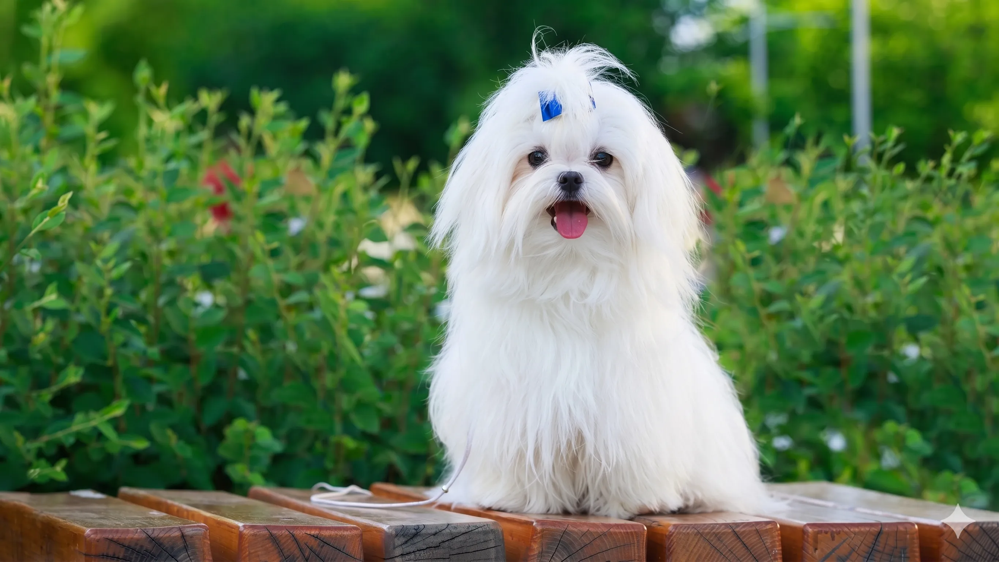

7 Dog Breeds That Are Perfect for Apartments in 2026 (Low Energy, Low Maintenance & Totally Adorable)


The most common mistake people make when choosing an apartment dog is thinking only about size. Small equals apartment-friendly, right? Not necessarily. A Jack Russell Terrier is tiny — and a complete disaster in a flat without a garden, because its energy level is off the charts. A Greyhound, on the other hand, can comfortably live in a one-bedroom apartment because, despite being one of the largest breeds, it spends most of its day lying perfectly still on a sofa. The real deciding factors are energy level, barking tendency, adaptability, and grooming demand — and all seven breeds in this guide score excellently across all four.
As a veterinarian who has advised hundreds of urban pet owners, I have chosen this list based on clinical observation, breed behaviour research, and the practical reality of shared-wall living. Every breed below can genuinely thrive in an apartment — not just survive in one.
Table of Contents
- What Actually Makes a Dog Apartment-Friendly?
- 1. Japanese Chin — The Silent Aristocrat
- 2. Brussels Griffon — Velcro Dog With a Big Personality
- 3. Chihuahua — The World's Smallest Dog With the Loudest Confidence
- 4. Yorkshire Terrier — The City Dog Icon
- 5. Maltese — The Gentle, Hypoallergenic Cuddler
- 6. Toy Poodle — The Tiny Genius With a Hypoallergenic Coat
- 7. Shih Tzu — The Royal Lap Dog Built for Indoor Living
- Full Breed Comparison Table
- Honourable Mentions: French Bulldog, Cavalier & Dachshund
- How to Keep Your Apartment Dog Happy in a Small Space
- Frequently Asked Questions
- Conclusion
What Actually Makes a Dog Apartment-Friendly?
According to the American Kennel Club, "adaptability and temperament matter more than size alone when selecting a breed for apartment living." A calm, adaptable medium-sized dog will outperform a high-energy toy breed in shared living environments every time.
When evaluating any breed for apartment living, four factors determine whether it will actually thrive rather than merely tolerate the arrangement:
Energy Level is the most critical factor. A high-energy dog that does not get sufficient daily exercise becomes anxious, destructive, and — in many cases — loud. Apartment-suitable breeds have energy requirements that can be realistically met through one or two daily walks and indoor play, without needing a garden or off-leash park access every day.
Barking Tendency matters enormously in shared-wall buildings. Breeds that bark at every sound — neighbours in corridors, lifts arriving, distant dogs — become a significant quality-of-life problem for both you and the people living around you. The breeds on this list score low to moderate on barking tendency according to AKC breed profiles.
Adaptability measures how easily a breed adjusts to confined spaces, irregular schedules, elevator rides, unfamiliar smells from neighbours' cooking, and the general sensory experience of urban apartment life. Highly adaptable breeds are unfazed by these variables. Sensitive or territorial breeds are not.
Grooming Demand is a practical factor in small spaces. Heavy-shedding breeds leave hair on every surface, which multiplies the cleaning burden considerably in a flat. Low or non-shedding breeds — particularly relevant for anyone sharing the space with allergy sufferers — are significantly more manageable.
🏯 1. Japanese Chin — The Silent Aristocrat
If every apartment could have an ideal dog, the Japanese Chin would be a serious candidate. Originally bred as a lap dog for Japanese imperial courts, this breed has spent centuries being refined for the exact lifestyle an apartment owner provides: warm interiors, quiet companionship, minimal physical demands, and close human contact. They are cat-like in their self-sufficiency — they groom themselves, move quietly, and are not prone to the anxious behaviour that plagues many small breeds in enclosed spaces.
- Arguably the quietest of all small breeds — rarely barks without genuine cause
- Naturally clean and low-odour compared to other long-coated breeds
- Happy with one short 15–20 minute walk daily; indoor play supplements the rest
- Deeply affectionate without being demanding — content to sit nearby without needing constant stimulation
- Adapt readily to apartment routines including elevator use and hallway encounters
🧡 2. Brussels Griffon — The Velcro Dog With Main Character Energy
The Brussels Griffon looks like a dog who has opinions about everything — and it does. With an expressive, almost human-looking face and an intensity that belies its tiny frame, the Griff bonds fiercely and permanently with its person. For someone who works from home or is around the flat for most of the day, this is an exceptional companion. For someone who leaves for eight hours at a stretch, it can become a difficult situation — Brussels Griffons are genuinely prone to separation anxiety and can become destructive or vocal when left alone for extended periods.
- Portable, sturdy, and adaptable to city life including public transport
- Highly intelligent — learns commands and tricks quickly, providing mental enrichment in small spaces
- Comes in rough-coated (wiry) and smooth-coated varieties; both are relatively low-shedding
- Alert without being neurotic — they will tell you someone is at the door, but they calm down quickly
- Thrives on training sessions, which can be done entirely indoors in 5–10 minute bursts
💪 3. Chihuahua — The World's Smallest Dog With the Loudest Confidence
The Chihuahua is the smallest breed in the world — and it has absolutely no idea. Confident, courageous, fiercely loyal to their chosen person, and genuinely curious about everything, Chihuahuas make extraordinarily devoted apartment companions. Their exercise needs are minimal: a short daily walk and some indoor playtime is entirely sufficient. They are also naturally tidy — small dogs produce small messes — and their short-coated variety requires almost no grooming beyond a weekly brush.
The asterisk on every Chihuahua apartment recommendation is barking. They are instinctively alert and will announce anything that passes the door, sounds in the corridor, or appears on the street outside the window. This is manageable with consistent training started early, but owners must be realistic: without active training, a Chihuahua in a flat is likely to generate noise complaints.
- The smallest footprint of any breed — literally takes up negligible space
- Very low exercise requirement makes them ideal for busy urban professionals
- Exceptionally devoted to one person; will follow their owner everywhere
- Long lifespan (14–16 years) — a Chihuahua is a decade-and-a-half commitment
- Naturally low odour and low shedding (short-coat variety)
🏙️ 4. Yorkshire Terrier — The Original City Dog
Yorkshire Terriers have been city dogs for over 150 years, originally working in the textile mills and coal mines of northern England before becoming one of the most popular urban companion breeds in the world. They are small, naturally low-shedding (their coat is more similar to human hair than dog fur), and adaptable to apartment rhythms. They are, however, terriers at heart — which means they have spirit, independence, and a genuine opinion about most things.
A Yorkie's energy level is higher than the other breeds on this list, which means owners need to be consistent about daily walks and indoor play. The good news is that their compact size means an energetic indoor play session with a toy satisfies a meaningful portion of their physical needs. They respond very well to training and can be conditioned to reserve barking for genuine events rather than general commentary on life.
- Non-shedding coat — exceptional for small spaces and allergy sufferers
- Confident and bold; travels well and adapts to city life, public transport, and pet-friendly cafes
- Highly trainable despite their independent streak — food motivation works extremely well
- Long lifespan (13–16 years) and relatively robust for their size
- Glamorous appearance with a dramatic, floor-length coat if kept long — or low-maintenance with a puppy clip
🤍 5. Maltese — The Gentle, Hypoallergenic Cuddler
The Maltese is one of the oldest companion breeds in existence — they appear in ancient Greek artwork and were prized by Mediterranean nobility for millennia as the quintessential lap dog. They have been perfected, essentially, for the life an apartment owner provides: warm interiors, close human contact, moderate activity, and the kind of gentle lifestyle that suits their docile, affectionate temperament. Their white, silky, non-shedding coat makes them excellent for allergy-conscious households.
Maltese are genuinely gentle — with children, other animals, and strangers — which makes them particularly suited to buildings where dogs regularly encounter neighbours in lifts and shared spaces. They are calmer than Chihuahuas and Yorkies, less clingy than Brussels Griffons, and quieter than most terrier breeds.
- Non-shedding and low-dander — among the best breeds for allergy sufferers in small spaces
- Gentle and friendly with virtually everyone, including strangers and other pets
- Happy with two 15–20 minute walks daily; satisfied by indoor enrichment on rest days
- Calm, even temperament — not prone to the anxiety that affects many smaller breeds
- Highly responsive to positive reinforcement training
🧠 6. Toy Poodle — The Tiny Genius With a Hypoallergenic Coat
Poodles are consistently ranked among the most intelligent dog breeds in the world — and Toy Poodles carry the same exceptional cognitive ability in a compact, apartment-sized package. This intelligence is the Toy Poodle's most important apartment attribute: a smart dog can be mentally satisfied through puzzle toys, training sessions, and interactive games conducted entirely within a flat, with shorter physical exercise needs as a result. A Toy Poodle that gets 15 minutes of serious trick training will be calmer and more settled for the rest of the day than a less intelligent breed that only gets a 30-minute walk.
Their curly, continuously growing coat is hypoallergenic — it does not shed in the traditional sense, meaning minimal hair throughout the apartment — but it does require professional grooming every 4–6 weeks to prevent matting.
- Non-shedding hypoallergenic coat — genuinely ideal for small, enclosed spaces
- Exceptional intelligence means they can be deeply satisfied through mental stimulation without constant physical exercise
- Adaptable and sensitive to their owner's routine and emotional state — very "easy to live with"
- Quiet by poodle standards — they alert bark but are not vocal without cause
- Long lifespan (12–16 years) and generally robust health for a toy breed
👑 7. Shih Tzu — The Royal Lap Dog Built for Indoor Living
The Shih Tzu was developed entirely as a companion dog for Chinese royalty — literally bred to do nothing except be adorable and companionable in an indoor environment. This singular purpose makes them exceptionally well-suited to apartment living. They have no working drive, no herding or hunting instinct, no strong territorial impulse — only the desire to be close to their people and comfortable in their environment. They are one of the most naturally calm, non-demanding breeds available, and their gentle nature means they rarely create the noise or disruption that challenges apartment co-existence.
- Genuinely low energy — one short daily walk is sufficient for most adult Shih Tzus
- Among the quietest apartment breeds; rarely barks without genuine cause
- Friendly and gentle with everyone — neighbours, children, other dogs, strangers in lifts
- Low-shedding coat reduces surface hair in small spaces
- Thrives on routine — apartment rhythms suit them perfectly
The best apartment dog is not just the breed that fits in a small space — it is the breed whose specific needs, temperament, and energy level match your actual daily routine. An honest self-assessment of how many hours a day you are home, how much time you can commit to exercise, and whether you have allergy considerations will narrow the seven breeds on this list to your perfect match.
Full Breed Comparison Table
| Breed | Weight | Energy | Barking | Grooming | Hypoallergenic | Daily Walk | Best For |
|---|---|---|---|---|---|---|---|
| Japanese Chin | 7–11 lbs | Very low | Very low | Low–Moderate | No | 15–20 min | Quiet households, those wanting a cat-like dog |
| Brussels Griffon | 8–12 lbs | Moderate | Moderate | Low–Moderate | No | 20–30 min | Work-from-home owners, dog-training enthusiasts |
| Chihuahua | Under 6 lbs | Low–Moderate | High (trainable) | Very low | No | 15–20 min | Single owners, patient trainers |
| Yorkshire Terrier | Under 7 lbs | Moderate–High | Moderate | Moderate (non-shed) | Yes | 20–30 min | Allergy sufferers, active apartment owners |
| Maltese | Under 7 lbs | Low–Moderate | Low–Moderate | Moderate (non-shed) | Yes | 15–20 min | Allergy sufferers, families, first-time owners |
| Toy Poodle | 4–6 lbs | Moderate | Low–Moderate | Moderate (non-shed) | Yes | 20–30 min | Allergy sufferers, training enthusiasts, WFH owners |
| Shih Tzu | 9–16 lbs | Low | Low | Moderate–High | No | 15–20 min | Those wanting maximum calm and affection |
Honourable Mentions: French Bulldog, Cavalier King Charles Spaniel & Dachshund
Three breeds that narrowly missed the main list are worth knowing about, particularly for owners who want slightly more personality variety or a larger-feeling dog in their apartment.
French Bulldog is arguably the most popular apartment dog in the world right now — and with good reason. They are predominantly quiet (the AKC describes them as "alert and playful, but not yappy"), require only moderate exercise, and their muscular compact build is purpose-built for small spaces. The caveats are significant though: they are strongly brachycephalic, which means serious heat sensitivity, snoring, and in some individuals, significant respiratory issues requiring veterinary management. They are also the most expensive breed to own due to health care costs. Buy only from a health-tested breeder who screens for respiratory and spinal issues.
Cavalier King Charles Spaniel is often called the ultimate companion dog — gentle, deeply affectionate, and adaptable to virtually any living situation. They need slightly more exercise than the breeds on our main list (two 20–30 minute walks daily), but their temperament is exceptional for apartment life. The main concern is heart health: Cavaliers have a very high rate of Mitral Valve Disease (MVD), often developing it before age 5. Health screening of both parents is essential when sourcing a Cavalier.
Dachshund — the "sausage dog" — is low to the ground, curious, loyal, and surprisingly adaptable to apartment life. Their main apartment challenge is barking: Dachshunds were bred to hunt badgers and have a loud, persistent bark that travels well through walls. With training, this is manageable. Their other significant concern is spinal health — their long spine makes them vulnerable to Intervertebral Disc Disease (IVDD), which is worsened by jumping. Apartment living actually suits them well in this regard as long as stairs and furniture jumping are minimised.
How to Keep Your Apartment Dog Happy in a Small Space
Research in canine behaviour consistently shows that 10–15 minutes of genuine mental challenge — puzzle feeding, nose work, trick training — tires a dog more thoroughly than a 30-minute walk. For apartment dogs, this is genuinely liberating information. You do not need a garden or a park to give your dog a deeply satisfying day.
Beyond daily walks, these strategies are consistently effective for keeping apartment dogs calm, satisfied, and behaviourally stable:
- Puzzle feeders and slow bowls: Feed meals through a Kong, a snuffle mat, or a puzzle board rather than a flat dish. This turns a two-minute event into a 15–30 minute mentally engaging activity. Our Thanksgiving treats guide also has frozen Kong recipes your dog will love.
- Window spots: Create an elevated lounging spot near a window. Dogs are environmental observers — watching street activity, birds, and passing humans provides genuine enrichment that reduces boredom-related behaviour.
- Trick training micro-sessions: Five minutes of active trick training twice a day — "sit," "paw," "roll over," "find it" — provides significant cognitive engagement and strengthens the bond between you and your dog. This is particularly important for intelligent breeds like the Toy Poodle and Brussels Griffon.
- Consistent routine: Apartment dogs benefit enormously from predictable schedules for feeding, walks, play, and rest. Routine reduces anxiety and the behaviours — barking, destructiveness — that stem from it.
- Lick mats and chew items: A lick mat spread with xylitol-free peanut butter and frozen overnight provides 20–40 minutes of calm licking activity that releases endorphins and reduces stress. Himalayan yak chews, bully sticks, and appropriate rubber chew toys provide safe chewing enrichment.
Frequently Asked Questions
What are the best dog breeds for apartments and small spaces?
The best apartment dogs combine low to moderate energy, quiet temperament, and adaptability to confined spaces. The top seven are Japanese Chin, Brussels Griffon, Chihuahua, Yorkshire Terrier, Maltese, Toy Poodle, and Shih Tzu. French Bulldogs, Cavalier King Charles Spaniels, and Dachshunds are also strong choices depending on your lifestyle.
Can big dogs live in apartments?
Yes — some larger breeds with genuinely low energy levels, such as Greyhounds, Great Danes, and Basset Hounds, adapt remarkably well to apartment life. A Greyhound, for example, spends 18–20 hours a day sleeping and requires only one good daily run. Size matters far less than energy level and temperament. That said, very small studios may not provide adequate floor space for large breeds to move comfortably.
What makes a dog breed suitable for apartment living?
The four key factors are: low to moderate energy level (needs met without a garden), low barking tendency (essential for shared walls), high adaptability (comfortable with lifts, corridors, and urban stimuli), and manageable grooming (low shedding is important in enclosed spaces). According to the AKC, adaptability and temperament matter more than size alone.
Are Toy Poodles good apartment dogs?
Excellent ones. Toy Poodles are among the most intelligent dog breeds in the world and can be deeply mentally satisfied through indoor puzzle games and training sessions, reducing their need for extensive physical exercise. Their hypoallergenic, non-shedding coat is a genuine bonus in small spaces. They require consistent grooming every 4–6 weeks.
How do I keep my apartment dog entertained in a small space?
Puzzle feeders, window spots, trick-training sessions, lick mats, and appropriate chew toys are the most effective enrichment strategies. Research shows that 10–15 minutes of genuine mental challenge tires a dog as effectively as a 30-minute walk. Consistent daily routines also significantly reduce anxiety-related behaviours in apartment dogs.
Which apartment dog breeds bark the least?
Japanese Chin and Shih Tzu are the quietest breeds on this list by a considerable margin. Maltese and Toy Poodles are also relatively quiet. Brussels Griffons and Yorkshire Terriers are moderate alert barkers — manageable with training. Chihuahuas tend toward high barking but respond well to consistent reward-based training.
Conclusion
All seven breeds on this list can lead genuinely happy, healthy, and fulfilled lives in an apartment — with the right owner. The right owner is not necessarily someone with a large flat or a nearby park. It is someone who is consistent with daily walks, provides mental enrichment through puzzle feeding and training, understands their breed's specific health vulnerabilities, and is realistic about how much time they spend at home.
If you work long hours away from home, lean toward a more independent breed like the Japanese Chin or a breed with lower separation anxiety risk. If you are at home most of the day, a Brussels Griffon or Toy Poodle will thrive with the engagement and training you can provide. If allergies are a concern, the Yorkshire Terrier, Maltese, or Toy Poodle's hypoallergenic coats are a practical choice.
Whichever breed you choose, remember that the apartment is simply where you live. What matters to your dog is that you are in it.
Have a breed you would add to this list, or a question about a specific breed's suitability for your apartment? Leave a comment below — our veterinary team reads every one.
Dr. Amelia Richardson
DVM, Senior Veterinary Editor
Veterinarian with 12+ years of experience in small animal medicine, pet nutrition, and behavioural science. Has advised hundreds of urban and apartment-dwelling pet owners on breed selection and indoor pet welfare. Passionate about ensuring every dog — regardless of living space — gets the care, enrichment, and environment it deserves.
Leave a Comment